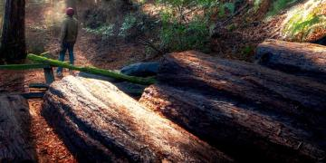

Develop basics
Develop is where you edit a photo. Every change is a setting stored in the catalog, rendered live from the original: the original file is never changed, and every step can be undone.
The Develop view
Select a photo and press D, click Develop in the toolbar, or right-click a photo › Edit in Develop.



 ⌄
⌄- Navigator: the whole photo; shows where you are when zoomed and previews presets.
- Presets and Snapshots. Click a section's header band to fold it.
- History: every change you made, newest first.
- The photo, rendered live.
- Before and After and the zoom buttons.
- The tool strip: Crop & Straighten, Masking and AI.
- The adjustment panels, from Basic to Effects.
- The Filmstrip: the other photos in the list. Arrow keys move between them.
Zoom and move around
| Double-click the photo, or Z | Switch between Fit and 100% at the spot you clicked. A single click does nothing, so a stray click never loses your zoom. |
| Fit · Fill · 100% · 200% | The buttons under the photo. Fit (arrows pointing in) shows the whole photo; Fill (arrows pointing out) fills the space. Rest the pointer on a button for its name. |
| Pinch, or ⌥/⌘ + scroll | Zoom freely, around the pointer. |
| Drag, scroll, or hold Space and drag | Move around while zoomed. |
| ⌘= · ⌘- · ⌘0 · ⌥⌘1 | Zoom in, zoom out, Fit, 100% (View menu). |
The zoom and the spot you're looking at stay put when you open a tool (Crop, Masking, Guided Upright, the color pickers) and come back. Atelier › Settings… › Develop chooses what a double-click zooms to (50% to 400%) and what happens when you move to another photo: open it at Fit or Fill, return to where you left that photo, or keep the same zoom as in Lightroom.
Navigator
The small photo at the top of the left column. When you're zoomed in, a white rectangle shows the part in view.
- Drag the rectangle to move around the photo.
- Click anywhere else in the Navigator to jump there. At Fit, a click zooms in on that spot.
- Rest the pointer on a preset to preview it here, without changing the photo.
Before and after
Compare your edit with the original.
- \
- Show the original until you press it again (the Before button under the panels does the same).
- Side by Side
- Before on the left, after on the right. Both zoom and pan together.
- Slider
- One photo with a divider: original on the left, your edit on the right. Drag the divider to compare; drag the photo to move around when zoomed.
- Y
- Step through Off, Side by Side and Slider.
The three buttons under the photo are icons (Off, Side by Side, Slider); rest the pointer on one for its name and key. A compare view opens at Fit. Going back to Off returns you to the zoom you had. As the photo column narrows, the hint goes first and then the zoom buttons fold into a menu.
Panels
- Click a header band to open or fold a panel. Atelier remembers which are open. The left column's sections (Navigator, Presets, Snapshots, History) work the same way.
- A blue dot next to the name means the panel has edits; ↺ resets just that panel.
- The on/off switch (every panel but Basic) turns the whole panel off to compare, keeping its settings. While it's off the controls are dimmed but still work: moving one turns the panel back on. Exports and presets follow the switch.
- Right-click a header for Solo Mode (opening one panel closes the others), Expand All Panels, Collapse All Panels and that panel's Help page.
- Drag the panel's left edge to make the column wider or narrower.
Reset a group
Double-click a group heading inside a panel (White Balance, Tone, Presence, Region, Sharpening, Grain…) to reset just those sliders. Or hold ⌥: the heading reads “Reset Tone” and one click resets it, as in Lightroom.
Sliders
- Double-click a slider's name to reset it. Shift-double-click a Tone slider's name to set it automatically.
- Click the value to type a number; Return sets it, Esc cancels. Bold means changed.
Every slider in Atelier works this way, in Masking, Crop and the AI brush too.
The small tick on the track is the default; the blue fill is your change. Colored tracks (Temp, Tint, Vibrance, HSL) show which way each end goes. Hold ⌥ while dragging many sliders to see what they affect: see ⌥-drag views.
Keyboard
Develop works from the keyboard the Mac way. Whatever has keyboard focus shows a thin blue bar at its left edge and a faint tint.
| Click, drag or Tab to a slider | Gives it focus. ← → ↑ ↓ move it a small step; hold ⇧ for five times as much. Holding a key keeps it moving; quick presses in a row make one history step. |
| Tab · ⇧Tab | Next or previous control, down through the open panels. |
| ⌃Tab · ⌃⇧Tab | Next or previous area: the left column (Presets), the right panels, then the photos (where ← → change photo). A thin blue outline flashes around the area you land on (for the photos, around the Filmstrip when it is showing), and focus comes back to the control you used last there. |
| Esc, or click the photo | Gives the arrow keys back to the photo, so ← → move between photos again. |
The Presets list takes the keys too: see Presets from the keyboard. Change ⌃Tab and the other command keys in Atelier › Settings… › Keyboard.
Color pickers
The White Balance Selector, Defringe's Fringe Color Selector and Color Grading's color picker all work the same way: click the eyedropper, then click the photo. A hint at the top of the photo says what to click (in orange if the click didn't set anything, with the reason). You can still zoom and move around while it's out, only one is out at a time, and Esc puts it away.
History and undo
Every change is a named step in History (Exposure +0.45, Straighten 4.0°, Preset: Punchy). History is kept with the photo. A drag records one step when you release the mouse, even if you pause partway through.
- ⌘Z undoes and ⇧⌘Z redoes, one step at a time.
- Click a step to go back to it. A new change from there replaces the steps after it.
- The ✕ in the History header clears the list but keeps the current look.
Snapshots
Save a look you like by name, keep editing, and come back to it.
- Click + in the Snapshots header and type a name.
- Click a snapshot to apply it again (that's a history step too).
- Right-click a snapshot to Update with Current Settings, Rename… or Delete.
Two versions side by side in the grid? Use a virtual copy instead: each copy has its own edits.
Copy, paste and reset
| ⇧⌘C or Copy | Copy this photo's settings. |
| ⇧⌘V or Paste | Paste them onto the selected photos. Right-click › Develop Settings works on the whole selection. |
| ⇧⌘R or Reset | Clear every edit on this photo (one undoable step). |
Histogram
The graph at the top of the right column shows how much of the photo is at each brightness, from black on the left to white on the right, for red, green and blue. It's drawn from the edited photo and updates as you work.
- Clipping triangles. The small triangles in the top corners light up when a color channel reaches pure black (left) or pure white (right), in the color of those channels; white means all three. Click a triangle to see on the photo what is really lost: pure white turns red and pure black turns blue. Saturated colors with only one channel at the end, like a deep blue sky, keep their detail and are not marked. J or Develop › Show Clipping turns both on or off. The colors are only on screen, never in exports.
- How much is clipped. Hover over a triangle to read the share of the photo it counts. Settings › Develop › Panels can show it next to the triangle as well, from half a percent.
- Drag to adjust. Hover over the graph and the part under the pointer lights up: Blacks, Shadows, Exposure, Highlights or Whites, from left to right. The line underneath shows that slider and its value. Drag left or right to change it, or double-click to reset it.